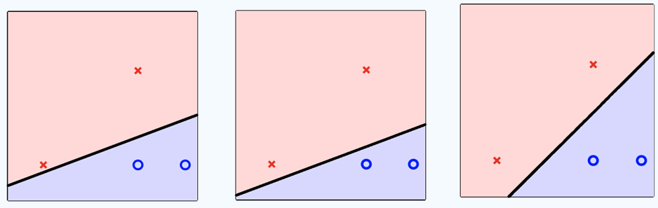
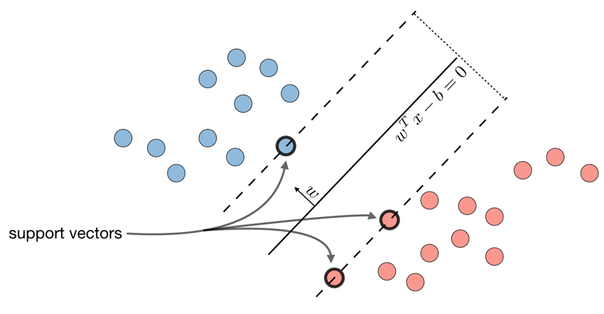
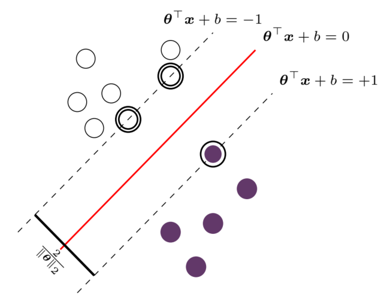

支持向量机（SVM）
感知机的局限性
在一个理想的、线性可分的二元分类问题中，我们的目标是找到一个超平面（在二维空间中就是一条直线），将两类数据点完全分开。
哪种分类器是最好的？
以图中的红叉和蓝圈为例，这组数据是线性可分的。感知机学习算法（Perceptron Learning Algorithm, PLA）就能够找到一个这样的分离超平面。然而，感知机算法存在一个问题：一旦它找到一个能够将训练数据完美分开的解，它就会停止更新。这意味着，对于同一份训练数据，感知机算法可能会给出多种不同的结果。

图中展示了三种可能的分类边界，这三个分类器在训练集上的表现都是完美的，它们的训练误差（In-sample Error,Ein）都等于0。 从我们之前学习的VC理论（VC Analysis）来看，这三个分类器的VC维（VC Dimension）是相同的，并且它们的Ein也都为0。因此，VC理论给出的泛化误差上界（generalization error bound）对于这三者来说是完全一样的。VC理论本质上是一种“最坏情况”的分析，它无法帮助我们从这些同样“好”（Ein=0）的分类器中挑出那个最好的。 然而，从直观上看，第三个分类器是最好的。因为它似乎为两类数据都留出了最大的“缓冲地带”，如果未来出现新的、与现有数据点略有偏差的数据，这个分类器看起来最有可能将它们正确分类。这种直觉上的“最好”正是我们接下来需要量化和优化的目标。
噪声容忍度：间隔 (Margin)
在现实世界的数据中，测量误差或随机扰动是不可避免的，我们称之为噪声（Noise）。这意味着我们观测到的数据点位置，可能并非其“真实”的位置。
图中用每个数据点周围的灰色阴影区域来表示这种“不确定性”或噪声的影响范围。我们可以理解为，数据点的真实位置可能位于这个灰色区域内的任何地方。
在这种存在噪声的情况下，一个好的分类器应该具备鲁棒性（Robustness）。所谓鲁棒，就是指即使数据点在其不确定性区域内发生微小移动，分类器依然能够给出正确的分类结果。
- 对噪声更宽容（Tolerate more noise）：如图所示，一个分类边界如果离所有数据点都比较远，那么它就能容忍更大范围的噪声。也就是说，即使数据点在较大的灰色区域内移动，也不会越过分类边界导致分类错误。这样的分类器就是更鲁棒的。
- 鲁棒性与正则化（Regularization）：追求一个对噪声更鲁棒的分类器，实际上是一种正则化的体现。通过寻找一个更鲁棒、能容忍更多噪声的解，我们实际上是在避免模型去拟合那些可能是由噪声导致的细微特征，从而得到一个更平滑、更简单的决策边界，这有助于防止过拟合，提高模型的泛化性能。
为了将“对噪声的容忍度”这个直观概念转化为一个可以计算和优化的数学量，我们引入了间隔（Margin）的概念。
图中，决策边界（黑线）与两类数据之间形成了一个“隔离带”或“缓冲区”，这个区域被标记为黄色的分离区域（separation region）。
- 分离区域的厚度：这个区域的厚度直接反映了分类器能容忍的噪声量。任何数据点只要其扰动范围不超过它到决策边界的距离，它的分类结果就不会改变。
- 定义间隔（Margin）：分类器的间隔，被定义为决策边界与所有训练数据点中最近的那个点之间的距离。这个距离决定了分离区域厚度的一半。
因此，我们的目标就变得非常清晰了：寻找一个不仅能将数据正确分开，并且能使这个间隔最大化的决策边界。
这就是最大间隔分类器（Maximum Margin Classifier）的核心思想。它完美地将我们最初的直觉——选择离两类数据“最远”的那个分类器——进行了数学上的形式化。通过最大化间隔，我们找到的分类器在理论上具有最好的鲁棒性和泛化能力。而这，也正是支持向量机（SVM）算法的基本出发点。
现在，我们需要先建立描述这个问题的几何与数学语言。
分类问题的描述
首先，我们要回顾一下之前学过的分类问题。我们从一个给定的训练数据集开始。这个数据集包含多个样本，每个样本由两部分组成：
- 一个特征向量xi：它位于一个d维的特征空间中，描述了样本的属性。
- 一个类别标签yi：它告诉我们这个样本属于哪一类。
对于二分类问题，我们约定使用yi∈{+1,−1}作为类别标签。例如，+1代表一类（正样本），−1代表另一类（负样本）。 决策函数 (Decision Function)
我们的初始目标非常明确：根据这些已知的(xi,yi)数据，学习出一个模型。这个模型在未来遇到新的、未见过的数据点x时，能够准确地预测出它的类别y。 因此，首要任务是找到一个函数，它能够根据数据点的特征，判断其属于哪个类别。对于线性分类问题，我们构建一个线性评分函数，称为决策函数 (Decision Function)，其形式如下：
f(x)=θ⊤x+b - x：是一个d维特征向量，代表输入的一个数据点，说明输入数据有d个特征。
- θ：是一个d维的权重向量，每个特征分配一个重要性权重。
- b：是一个标量，称为偏置项 (bias)。它可以被看作是一个基础评分，用于调整决策的阈值。
这个函数f(x)会为每个输入的数据点x计算出一个得分。我们根据这个得分的符号来判断样本的类别： - 如果f(x)>0，我们预测它属于一个类别（正类）。
- 如果f(x)<0，我们预测它属于另一个类别（负类）。
在监督学习中，每个样本(xi,yi)都有一个真实的类别标签，我们通常用yi∈{+1,−1}来表示。要使我们的决策函数能够正确分类，其输出的符号必须与样本的真实标签一致。这意味着： - 如果一个样本的真实标签是yi=+1，我们要求它的得分f(xi)=θ⊤xi+b>0。
- 如果一个样本的真实标签是yi=−1，我们要求它的得分f(xi)=θ⊤xi+b<0。
yi(θ⊤xi+b)>0 这个不等式是保证所有样本被正确分类的基本条件，也是我们后续推导的基石。
超平面 (Hyperplane)
既然我们已经定义了如何根据f(x)的正负来划分类别，一个自然的问题就是：不同类别之间的分界线在哪里？ 我们以正负来划分类别，那么分界线就在f(x)=0的位置。这条分界线由所有使得决策得分为零的点构成。在这些点上，模型无法判定其属于正类还是负类。因此，决策边界 (Decision Boundary) 的方程就是： f(x)=θ⊤x+b=0 在几何上，这个方程所定义的正是一个超平面 (Hyperplane)。我们可以用特征空间来表示。在特征空间中，每个维度代表一个特征（feature），每一个样本点xi则是在这些特征上的一个坐标。 - 在二维特征空间里，超平面是一条直线。
- 在三维特征空间里，它是一个平面。
- 在d维特征空间中，它是一个d−1维的子空间。
根据θ⊤x+b=0，权重向量θ是超平面的法向量，它与超平面垂直。我们可以通过一个简单的思想来证明——如果一个向量与一个平面内的任意向量都垂直，那么这个向量就必然是该平面的法向量。 从超平面上随机选取两个不同的点，分别记为x1和x2。因为这两个点都在超平面上，所以它们都必须满足超平面的方程： θ⊤x1+b=0θ⊤x2+b=0 现在，我们构造一个从x1指向x2的向量，即(x2−x1)。因为x1和x2都在超平面上，所以这个向量完全位于超平面之内。 接下来，我们来计算权重向量w与这个平面内向量(x2−x1)的点积（内积）。如果点积为零，就证明它们相互垂直。 θ⊤(x2−x1)=θ⊤x2−θ⊤x1=(−b)−(−b)=0 这证明了向量θ与向量(x2−x1)是垂直的。因为我们选择的x1和x2是超平面上任意的两个点，所以向量θ与超平面内的任何向量都垂直。因此，根据定义，θ就是这个超平面的法向量（在下图中记为w）。
因此，权重向量θ是超平面的法向量，它与超平面垂直，并决定了决策边界的方向。向量θ定义了平面的“朝向”或“倾斜度”。如果你旋转θ，整个超平面也会随之转动，始终保持与θ垂直。 偏置项b决定了决策边界相对于原点的位置。如果b=0，则超平面必须穿过坐标原点。具体来说，原点到超平面的距离是∥θ∥2∣b∣。b的作用就是沿着法向量θ的方向，将超平面从原点推开或拉近∥θ∥2∣b∣距离，从而放置在数据之间的最佳位置。 间隔的数学描述
一个合格的超平面可以有无数个，但我们的目标是找到最好的那一个。SVM认为，最好的超平面是那个能为两类数据点提供最大“缓冲地带”的平面。这个缓冲地带就叫做间隔 (Margin)。
如图所示，间隔是由两条平行于决策边界的虚线所界定的区域。而这两条虚线，恰好穿过了距离决策边界最近的那些数据点。这些最靠近决策边界、并“支撑”起整个间隔区域的关键数据点，被称为支持向量 (Support Vectors)。例如，下图中被黑色圆圈住的数据点，它们是整个模型构建中最核心的样本。
Stanford CS 229
我们有了“间隔最大化”的直观目标，现在需要用数学公式来精确地度量它。这里需要区分两种“距离”的概念：几何间隔和函数间隔。
几何间隔 (Geometric Margin)
几何间隔是指一个数据点xi到超平面(θ,b)真实的、物理上的欧几里得距离。根据解析几何中的点到超平面距离公式，我们可以得到： Distance=∥θ∥2∣θ⊤xi+b∣ 其中∥θ∥2=∑j=1dθj2是向量θ的L2范数（即向量的长度）。这个分母∥θ∥2起到了归一化的作用，确保了无论我们如何缩放参数(θ,b)，计算出的物理距离都是不变的。
为了将分类的正确性也考虑进来，我们引入类别标签yi，得到带符号的几何间隔γi： γi=yi(∥θ∥2θ⊤xi+b) 那么，支持向量的几何间隔，其实就是所有数据点中最小的几何间隔：
γmin=iminγi=iminyi(∥θ∥2θ⊤xi+b) 函数间隔 (Functional Margin)
我们观察到，几何间隔的分子部分yi(θ⊤xi+b)也能反映分类的正确性及其置信度。我们将其定义为函数间隔γ^i： γ^i=yi(θ⊤xi+b) - γ^i>0表示分类正确。
- γ^i的绝对值越大，代表模型对该点的分类结果越确信，点距离超平面越远。
那么，支持向量的函数间隔，也是所有数据点中最小的函数间隔：
γ^min=iminγ^i=yi(θ⊤xi+b) 函数间隔的缺陷：考虑一个超平面(θ,b)，如果我们将其参数变为(2θ,2b)，此时： - 决策边界：2θ⊤x+2b=0⟺θ⊤x+b=0。超平面的位置没有改变。
- 函数间隔：γ^i变为yi(2θ⊤xi+2b)=2γ^i。函数间隔被人为地放大了两倍。
- 几何间隔：γi变为∥2θ∥2∣2θ⊤xi+2b∣=2∥θ∥22∣θTxi+b∣=γi。几何间隔保持不变。
- 几何间隔是描述点到超平面距离的唯一正确的物理度量。
- 函数间隔虽然方便计算，但其数值会随着参数的缩放而改变，因此不能直接用来作为优化的目标。
至此，我们已经建立了描述SVM间隔问题的基本组件，并精确区分了两种距离度量。
优化问题的推导
如果分类正确，γi是一个正值，其大小就等于点xi到超平面的真实距离。我们的最终目标就是找到一个超平面，使得所有点中最小的那个几何间隔（即miniγi）被最大化。 θ,bmax(iminγi)⇒θ,bmax(iminyi(∥θ∥2θ⊤xi+b)) 这个形式非常复杂，难以直接求解。然而，我们在前面讨论的函数间隔的“缺陷”——它的缩放不稳定性——将成为我们简化问题的关键。
 机器学习 - 鸢尾花系列
机器学习 - 鸢尾花系列超平面的规范化
回顾一下，对于一个确定的超平面，其参数(θ,b)和(kθ,kb)（其中k为任意正数）是等价的，因为它们定义的决策边界完全相同。 这意味着，我们寻找的最优解本质上是超平面的几何位置，而不是某一组特定的(θ,b)参数值。对于这个最优超平面，存在无穷多组成比例的参数可以表示它。 既然如此，我们完全可以从这无穷多组等价的参数中，挑选出一组最方便计算的来使用，而不会损失解的任何普遍性。
这个“方便的”标准是什么呢？让我们来设定一个规范化 (Normalization) 条件。
考虑任意一个超平面(θ,b)，它总会有一些距离它最近的点（未来的支持向量）。这些点拥有最小的函数间隔，可以用“在所有点的函数间隔中寻找最小值”的式子表示： γ^min=iminyi(θ⊤xi+b) 现在，我们可以对这组参数(θ,b)进行缩放，得到一组新的参数(θ′,b′)： θ′=γ^minθ,b′=γ^minb 这组新参数(θ′,b′)代表的是同一个超平面。但是，在这组新参数下，最小的函数间隔变成了： iminyi(θ′⊤xi+b′)=iminyi(γ^minθ⊤xi+b)=γ^min1iminyi(θ⊤xi+b)=γ^minγ^min=1 这个推导证明了一个至关重要的结论：对于任何一个潜在的决策超平面，我们总能找到一种参数表示方式，使得其支持向量上的函数间隔恰好等于1。
iminγ^i=iminyi(θ⊤xi+b)=1 那么，对于一个支持向量xi，其几何间隔γi就可以简化为： γi=yi(∥θ∥2θ⊤xi+b)=yi∥θ∥21 一个具体的例子
为了让这个概念更清晰，我们来看一个二维空间中的实例。假设我们找到了一个决策边界，其方程为：
0.5x1−x2+1=0 θ⊤x+b=(0.5−1)(x1,x2)−1=0 这里的初始参数是θ=(0.5−1)和b=1。
同时，假设我们发现距离这个边界最近的一个支持向量（负样本）是点xsv=(45)，那么，其类别标签为ysv=−1。 ∥θ∥2=0.52+(−1)2=0.25+1=1.25=25≈1.118 这个支持向量的几何间隔γmin为： γ^min=ysv(∥θ∥2θ⊤xsv+b)=(−1)×(0.52+(−1)20.5×4−1×5+1)=(−1)×(25−2)=54 同样，在当前参数(θ,b)下的函数间隔γ^min为： γ^min=ysv(θ⊤xsv+b)=(−1)×(0.5×4−1×5+1)=(−1)×(−2)=2 函数间隔（值为2）是一个无单位的值，而几何间隔（值为54）是该点到直线的真实欧几里得距离。 在这个表示下，支持向量的函数间隔是2，而不是我们最终想要的1。
接下来，我们应用规范化步骤，将原始参数除以刚刚算出的最小函数间隔γ^min=2： θ′=γ^minθ=(0.25−0.5),b′=γ^minb=0.5 这组新的、规范化后的参数(θ′,b′)定义了新的决策边界方程。 0.25x1−0.5x2+0.5=0 这个方程与原始的0.5x1−x2+1=0代表的是完全相同的几何直线（两边同乘以2即可得到）。 让我们来验证一下，在这组新的、规范化的参数下，支持向量xsv=(4,5)的函数间隔是否真的变成了1： γ^′=ysv(θ′⊤xsv+b′)=(−1)×(0.25⋅4−0.5⋅5+0.5)=(−1)×(1−2.5+0.5)=(−1)×(−1)=1 完全正确！经过规范化后，支持向量的函数间隔不多不少，正好等于1。
现在，由于我们已经将支持向量的函数间隔“锁定”为1，计算其几何间隔也变得异常简单。对于任意支持向量，其几何间隔的计算公式为：
γsv=∥θ′∥2ysv(θ′⊤xsv+b′)=∥θ′∥21 这告诉我们，在规范化表示下，支持向量的几何间隔就是权重向量范数的倒数。让我们为本例计算一下：
γsv=∥θ′∥21=0.252+(−0.5)21=45 可以看到，这个结果与我们在第1步中计算的几何间隔完全一致。这证明了规范化过程并没有改变超平面的任何几何属性，包括它与支持向量的真实距离，并且经过规范化后，计算其几何间隔也变得异常简单。
推导最终的目标函数
回顾一下，SVM的最终目标就是找到一个超平面，使得所有点中最小的那个几何间隔（miniγi）被最大化，或者说使支持向量的几何间隔（γmin）最大化。 θ,bmax(γmin)=θ,bmax(iminγi)=θ,bmax(iminyi(∥θ∥2θ⊤xi+b)) 这个形式非常复杂，难以直接求解。然而，经过前面超平面的规范化，我们知道了对于任何一个潜在的决策超平面，我们总能找到一种参数表示方式，使得其支持向量上的函数间隔恰好等于1。
γ^min=iminγ^i=iminyi(θ⊤xi+b)=1 那么，其几何间隔γmin就可以简化为： γmin=yi(∥θ∥2θ⊤xi+b)=yi∥θ∥21 对于支持向量而言，我们的原始问题就得到了大大简化：
θ,bmax∥θ∥21 最大化∥θ∥21显然等价于最小化∥θ∥2。为了数学上的便利（去除根号，方便后续求导），我们通常将其转化为优化∥θ∥22，这同样是等价的。 θ,bmin∥θ∥22 这个目标函数是针对支持向量的，我们拓展到所有数据点，只需要增加一个约束条件即可。
我们已经规定了支持向量（函数间隔最小的点）其函数间隔为1，那么对于其他所有数据点，它们的函数间隔必须大于或等于1。因此，约束条件为：
yi(θ⊤xi+b)≥1,for all i=1,…,n 现在，我们将简化的目标函数和约束条件组合在一起，得到了支持向量机（线性可分情况）最终的、标准的目标函数。寻找最大间隔超平面的过程，等价于求解下面这个带有约束的二次规划 (Quadratic Programming)问题：
θ,bmins.t.∥θ∥22yi(θ⊤xi+b)≥1,∀i 这是一个凸优化问题，意味着它不存在局部最优解，只有一个全局最优解。这个问题可以通过拉格朗日对偶等方法高效求解，从而得到最优的(θ∗,b∗)。 
最后，让我们回到几何直觉，验证一下我们推导出的结果。
根据我们的规范化，支持向量恰好满足ys(θ⊤xs+b)=1。 - 对于正类 (ys=1) 的支持向量，它们落在超平面θ⊤x+b=1上。
- 对于负类 (ys=−1) 的支持向量，它们落在超平面θ⊤x+b=−1上。
这正是我们一开始就提到的、构成边界（margin）的两条平行线。它们之间的垂直距离就是最大间隔。
根据几何结论，两个平行超平面θ⊤x+b=a1和θ⊤x+b=a2之间的距离是∥θ∥2∣a1−a2∣，代入a1=1和a2=−1，我们得到间隔宽度为： Margin=∥θ∥2∣1−(−1)∣=∥θ∥22 这个结果完美地闭合了我们的逻辑链条：我们求解的目标是最小化∥θ∥22，这等价于最大化∥θ∥22，而这正是我们一开始就希望得到的最大间隔。 至此，我们通过严谨的数学推导，最终得到了一个清晰、可解的优化问题，并验证了其解的物理意义。
Machine Learning Refined Foundations
最大化间隔的哲学
我们从正则化理论和统计学习理论（VC维）的层面回答一个问题：“为什么最大化间隔（Maximum Margin）是一个好策略？”
正则化视角
正如我们之前所确立的，寻找最大间隔的优化目标等价于最小化权重向量的L2范数平方(min21∥θ∥22)。在机器学习中，这种在目标函数中加入一个用于限制模型参数大小的项，被称为L2正则化 (L2-regularization)，也常称为权重衰减 (weight decay)。 回顾一下，正则化的核心作用是防止模型过拟合 (overfitting)，提升模型的泛化能力 (generalization)。
- 什么是过拟合？一个模型如果过于复杂，它可能会把训练数据中的噪声和随机波动都学习进去，导致在训练集上表现完美，但在新的、未见过的数据（测试集）上表现很差。
- 正则化如何工作？通过惩罚过大的权重值（即最小化∥θ∥22），正则化会引导模型学习到一个“更简单”的解。一个权重值更小的模型，其决策边界通常更平滑，对输入特征的微小变化不那么敏感。这种“简单性”使得模型更不容易被训练数据中的噪声所迷惑，从而能够更好地适应未来的未知数据。
因此，从正则化的角度看，支持向量机（SVM）天生就包含了一种正则化的思想。它不仅仅是找到一个能分开数据的超平面，更是通过最大化间隔来找到那个最“简单”、最“鲁棒”的超平面，这种特性使其能够更好地容忍噪声。
统计学习理论视角
接下来，我们从一个更严谨的数学理论——VC维 (VC dimension)——来分析为什么最大间隔是有效的。
VC维的基本概念
回顾一下，VC维是衡量一个分类模型（或称为假设空间 (hypothesis set)）复杂性或容量 (capacity) 的一个核心指标。一个模型的VC维越高，意味着它能“记住”或“拟合”的数据模式就越复杂、越多样。
- 定义：一个假设空间的VC维，是指该模型能够打散 (shatter) 的最大数据点数量。
- 打散 (Shatter)：如果对于一个包含N个点的样本集，无论我们如何为这N个点分配正负标签（总共有2N种分配方式），模型空间中总能找到一个分类器能完美地实现这种分配，那么我们就说这个模型空间可以“打散”这N个点。
一个基本结论是：对于d维空间中的任意（二元）线性分类器，其VC维是**d+1**。 VC维理论告诉我们，一个模型的泛化误差Eout与它的训练误差Ein和VC维dVC有关。一个简化的泛化界公式如下： Eout≤Ein+Ω(dVC,N,δ) 其中，Ω是一个与VC维正相关的复杂度项。这意味着，要获得更好的泛化能力（更小的Eout），我们不仅要让训练误差Ein小，还要让模型的复杂度dVC尽可能小。 引入间隔的VC维分析
现在，我们将间隔（margin）的概念引入VC维分析。SVM所做的，并不仅仅是在所有线性分类器中进行搜索。实际上，它是在一个受限制的假设空间中进行搜索。
- 让我们定义一个新的假设空间Hρ，它包含所有在d维空间中**间隔至少为ρ**的超平面。
- 我们的目标是证明，通过施加“必须有一定间隔”这个约束，我们实际上降低了假设空间的复杂度，即这个新空间Hρ的VC维要小于d+1。
有一个重要的定理给出了这个新假设空间VC维的一个上界。
定理：假设所有输入数据点都位于一个半径为R的超球体内（即∥x∥≤R）。那么，间隔至少为ρ的超平面构成的假设空间，其VC维dVC(ρ)满足以下不等式： dVC(ρ)≤⌊ρ2R2⌋+1 （注：⌊⋅⌋表示向下取整） 分析这个定理：这个上界公式揭示了一个至关重要的关系：
- VC维的上界与间隔ρ的平方成反比。
- 这意味着，当我们要求的间隔ρ越大时，ρ2R2的值就越小，从而VC维的上界就越低。
由于我们知道任何线性分类器的VC维最高不超过d+1（更精确地说是d），我们可以取这两个上界中更严格的那个，得到： dVC(ρ)≤min(⌊ρ2R2⌋,d)+1 结论：这个经过修正的VC维分析，为“最大化间隔”提供了强有力的理论支撑。
- 间隔控制复杂度：上述定理表明，间隔ρ的大小可以直接用来控制模型的复杂度（VC维）。
- 最大化间隔→最小化复杂度→提升泛化能力：
- SVM的目标是最大化间隔（maxρ）。
- 根据定理，最大化ρ会导致VC维的上界降低。
- 根据泛化理论，更低的VC维意味着更小的泛化误差Eout。
因此，寻找最大间隔超平面的过程，本质上是在所有能够完美划分训练数据（对于硬间隔SVM，Ein=0）的分类器中，选择那个模型复杂度最低、最有望在未来数据上表现最好的分类器。这完美地解释了为什么SVM拥有出色的泛化性能。